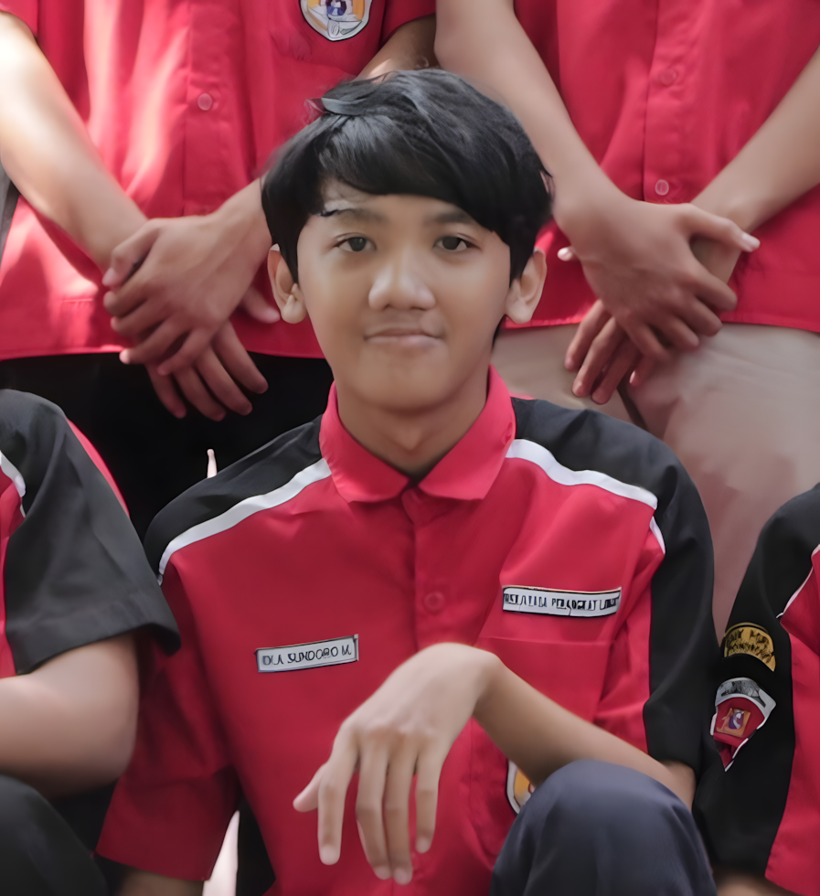

2025 — Sekarang
Universitas Muhammadiyah Ponorogo
Informatika
Perguruan Tinggi
CURRICULUM VITAE
Mahasiswa Informatika
Mahasiswa Informatika yang memiliki minat pada pengembangan perangkat lunak dan teknologi web modern.
Informatika
Perguruan TinggiRekayasa Perangkat Lunak
SMKSekolah Menengah Pertama
SMPSekolah Dasar
SDNext.js · JavaScript · TypeScript · HTML · CSS
Python · Elysia.js
Mengembangkan kemampuan sebagai software developer dengan fokus pada teknologi web, pengembangan aplikasi, dan eksplorasi teknologi modern.